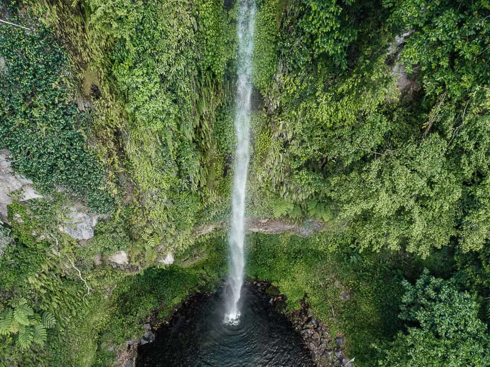
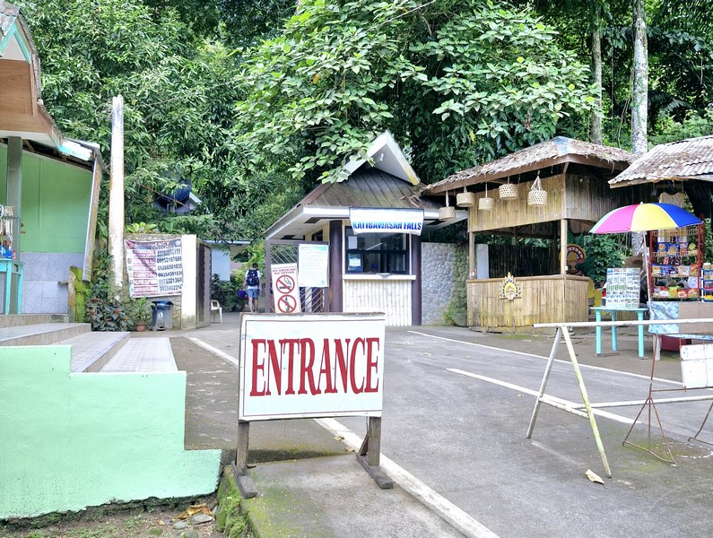

Katibawasan Falls, Camiguin
A historic and peaceful landmark where memory, sea, and scenery meet.

About Katibawasan Falls
Katibawasan Falls is the tallest waterfall on Camiguin Island, standing approximately 70–76 meters high, and is a must-visit natural attraction for swimming and sightseeing.Known as the Island Born of Fire, Camiguin is home to majestic volcanos, steaming hot springs, pristine waterfalls, black-sand beaches, and vibrant marine life – all without the crowds. The island’s slow pace, friendly locals, and commitment to ecotourism make it a refreshing destination to visit in the Philippines.
The mountainous landscape and lush vegetation hide some stunning waterfalls in Camiguin, including the stunning Katibawasan Falls.
Its convenient location and breathtaking beauty mean there is no excuse not to add this natural wonder to your Camiguin itinerary.
More than just a tourist destination, Sunken Cemetery tells a story of Camiguin's history and resilience. Visitors are drawn not only by its scenic beauty, but also by its peaceful atmosphere and the cultural significance of the landmark.
What You Can Do
- Swim in the Natural Pool
- Explore the Surrounding Nature or Local Habal Habal Tours
- Have a Picnic or Rent a Cottage
- Take Photos of the Falls
- Local Souvenire, Snacks, and Food Vendors
Travel Information
Location
Katibawasan Falls is located in Mambajao, the capital town of Camiguin. It is about 5 kilometers southeast of the town center, making it easy to reach by motorcycle, tricycle, or car. The waterfall is approximately 76 meters (250 feet) high, surrounded by a lush tropical forest. It is one of the most famous natural attractions in Camiguin and is part of many island tours.
Best Time to Visit
- Early Morning (7:00am - 9:00am)
- Fewer Tourists
- Cooler Temperature
- For Aesthetic Photos
- Dry Season (March - June)
- Easier Travel Conditions
- Clearer Surroundings and Safer Swimming
- Weekdays
- Less Crowded Compare to Holidays, and Weekdays
Reminders for Visitors
- Bring a camera or phone for pictures.
- Wear comfortable clothes for warm weather.
- Be careful near the water and boat area.
- Respect the place because it is a historical site.
Gallery



Discover More of Camiguin